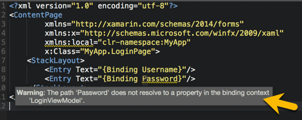
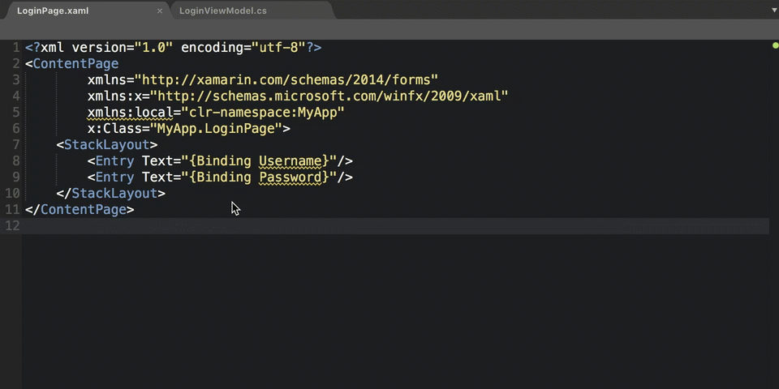
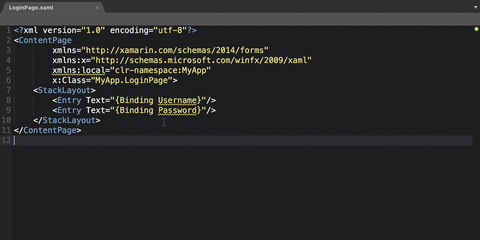

Implementing View Models
Generate properties and view models from XAML to C# using code fixes and the Implement View Model refactoring
Introduction
In Xamarin.Forms apps, we design our applications using the Model - View - ViewModel design pattern; relying on binding mechanisms to mirror data back and forth between the view and view model.
We accomplish this data-transfer behaviour through the Binding Markup Extension. This is a Xamarin.Forms API that implements the IMarkupExtension interface; it reflects changes from the binding context to the view and vice-versa.
We use the binding markup extension syntax in our XAML views:
LoginPage.xaml.cs
<Entry Text="{Binding Username}"/>
LoginViewModel.cs
public class LoginViewModel
{
public string Username { get; set; }
}
In the above example, {Binding Username} points to a public property on the LogingPages binding context, the LoginViewModel. When the user enters text, changes are automatically applied into the Username property.
But what if we introduced a new Entry bound to Password, a property that doesn't exist on the LoginViewModel:
LoginPage.xaml.cs
<Entry Text="{Binding Username}"/>
<Entry Text="{Binding Password}"/>
Provided we have configured the views binding context correctly, the XAML analyser recognises this is a runtime bug and marks it:

MFractor encourages a XAML first workflow; you write out bindings in XAML and then generate the implementation on the view model.
This is a big change to existing workflows. Previously, we coded these properties by hand and wire them up manually in the XAML; an approach both time-consuming and error prone. You have to remember property names, property types, control types and then you need to write this all out by hand!
Using binding generation we can literally eliminate minutes of work and hundreds of keystrokes in a few clicks.
MFractor provides the following shortcuts to implement our bound properties:
- Fix Missing Binding: A code issue fix that generates a single binding property onto the view model.
- Implement View Model: A refactoring action that collects all missing bindings and generates them in bulk on the view model.
Let's examine these two methods of implementing missing properties using MFractor.
Issue Fixing on Missing Bindings
When MFractor detects that a property in a binding expression doesn't exist on the binding context, it adds a code issue at the missing bindings location.
To action the code isxue fix, we right click on the issue (underlined in yellow), navigate to Fix and then select Generate a property....

We have two options available when generating a property:
Generate a property named XXX in XXX creates a new public property with a public get and set accessor:
public string Password { get; set; }
Generate a property named XXX in XXX with backing fields creates a new public property with a public get and set accessor that sets or gets a backing field:
private string _password;
public string Password
{
get
{
return _password;
}
set
{
_password = value;
}
}
The default getter / setter fix is most useful when:
- We want a plain old property with no backing logic.
- We are using Fody's ImplementPropertyChanged attribute on our ViewModel to automatically add INotifyPropertyChanged behaviour.
The backing field fix is most useful when:
- We want backing logic that occurs when our property changes.
- We occasionally want to manipulate the properties backing field without changes propagating to the UI.
The Implement ViewModel Refactoring
Another way to generate properties for a view model is to use the Implement View Model refactoring. This shortcut collects all missing binding expressions (excluding bindings inside DataTemplates) and generates them in bulk onto the binding context.
We can access this short cut by right clicking anywhere in a XAML file, navigating to Generate and then selecting the Implement View Model action:

You'll notice that there are 2 actions:
- Implement View Model gathers all missing bindings in the XAML document and implements them all as public properties with a public
getandsetaccessor. - Implement View Model (Use Backing Fields) gathers all missing bindings in the XAML document and implements them all as public properties with a public
getandsetaccessor that sets or gets a backing field.
There are often cases when a binding context isn't specified explicitly and can't be inferred implicitly. A common example of this is that you have just started to build a XAML view and haven't yet got around to building the corresponding view model.
The Implement View Model action can also generate a view model class for the XAML view if one is not already defined. Using Mvvm naming conventions, MFractor generates a view model class for your XAML view under the MyDefaultNamespace.ViewModels namespace.
For example:
LoginPage.xaml.cs
<Entry Text="{Binding Username}"/>
<Entry Text="{Binding Password}"/>
When creating the view model class, MFractor removes the Page or View suffix from the view name and then attaches ViewModel to the end of the resulting name.
-
- Remove the Page or View suffix: LoginPage -> Login
-
- Attach the ViewModel suffix: Login -> LoginViewModel
-
- Generate a new class named
LoginViewModelunder the namespaceMyDefaultNamespace.ViewModels.
- Generate a new class named
This would result in the following view model class file:
LoginViewModel.cs
public namespace MyDefaultNamespace.ViewModels
{
public class LoginViewModel
{
public string Username { get; set; }
public string Password { get; set; }
}
}
If you project references Fody's ImplementPropertyChanged extension, the default getter / setter implementation will also annotate the result with the [ImplementPropertyChanged.PropertyChanged] attribute:
LoginViewModel.cs
[ImplementPropertyChanged.PropertyChanged]
public class LoginViewModel
{
}
Generating Commands Implementations
When MFractor encounters a property that expects the System.Windows.Input.ICommand interface, it will generate a property returning a empty command implementation.
For example, we bind our login button to a LoginCommand property on our view model:
<Button Command="{Binding LoginCommand}"/>
When MFractor generates the property for LoginCommand, it creates an empty command implementation:
public System.Windows.Input.ICommand LoginCommand
{
get
{
return new Xamarin.Forms.Command(() =>
{
throw new NotImplementedException();
}
);
}
}
Binding Generation And Value Converters
When a binding expression uses a Converter, MFractor will attempt to resolve the input type of the referenced value converter and use that as the property type. We must have a value conversion attribute on the IValueConverter for MFractor to resolve the input type. Please read the Value Conversion Type-Safety tutorial to learn more.
For example, we add a login button that is only enabled when the user has their password entered:
<ResourceDictionary>
<local:StringToBoolConverter x:Key="stringToBoolConverter" />
</ResourceDictionary>
<Button IsEnabled="{Binding Password, Converter={StaticResource stringToBoolConverter}}"/>
Provided that stringToBoolConverter is annotated to accept string inputs and return a boolean output, MFractor can still generate Password as a string even though IsEnabled is a boolean property.
If there is no value conversion information on the value converter, MFractor will default to Systen.Object as the type for our property:
public System.Object Password
{
get; set;
}
Summary
By building our apps using the XAML first mindset, we can leverage MFractor's binding generation to implement our view models quickly.
In this tutorial we learnt:
- We can generate entire view models using the Implement View Model refactoring action.
- We can generate single properties using code issue fixing.
- We need a binding context to activate binding expression analysis and issue fixing.
- When a binding uses a value converter, MFractor use the correct type when the converter has a value conversion attribute.